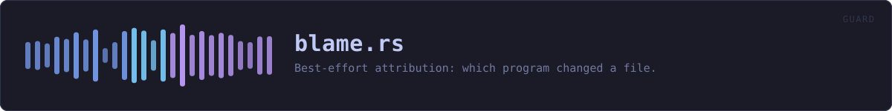

crates/veilvoice-guard/src/blame.rs
veilvoice-guard · 413 lines · read the source
Best-effort attribution: which program changed a file.
Read this before relying on it
Most of the time this cannot answer, and says so. Neither Windows nor Linux records who wrote to a file unless auditing has been switched on for that path in advance, and on a normal desktop it has not been. An unprivileged program cannot switch it on either.
So the honest design is a function that returns Blame::Unknown with a reason, and tells the user what would have to be configured for a real answer. A plausible guess would be worse than nothing here: naming the wrong program to somebody worried about surveillance is not a small error.
Where an answer can come from
- Linux -- the kernel audit subsystem. With a watch in place (
auditctl -w <path> -p wa -k veilvoice),ausearchreports the syscall, the pid and the executable name for every write. Reading those records usually needs root as well. - Windows -- object access auditing. With a SACL on the file and the "Audit File System" policy enabled, Security event 4663 records the process that opened it for write.
wevtutilcan query that log, though reading the Security log needs elevation.
Both are checked for, neither is configured by this crate, and the absence of either is reported rather than hidden. Setting them up is a deliberate act by an administrator, and pretending otherwise would misrepresent what a clean report means.
WHAT THIS FILE CONTAINS
413 lines defining 6 functions (3 public), 1 type and 0 constants. Everything below is read out of the source, so it cannot disagree with the code.
The types it owns.
enum Blameline 94 — What, if anything, is known about who changed a file.
What happens when it runs. These are the ways in: public, and nothing else in this file calls them, so they are what an outside caller reaches first.
Blame::describeline 115 — A single line for a terminal, an alert or a log.Blame::is_knownline 126 — Whether an actual name was found.who_touchedline 151 — Try to name the program that last wrote to path.
reachesunconfigured
WHAT CALLS WHAT
The functions this file defines, and the calls between them. An edge means the callee's name appears, called, inside the caller's body — a syntactic reading, not a type-resolved one.
The same graph as Mermaid source
%%{init: {"theme":"base","themeVariables":{"background":"#1a1b26","primaryColor":"#1f2335","primaryTextColor":"#c0caf5","primaryBorderColor":"#7aa2f7","secondaryColor":"#16161e","tertiaryColor":"#16161e","lineColor":"#737aa2","textColor":"#c0caf5","mainBkg":"#1f2335","nodeBorder":"#7aa2f7","clusterBkg":"#16161e","clusterBorder":"#2f3549","fontFamily":"ui-monospace, SFMono-Regular, Consolas, monospace","fontSize":"14px"}}}%%
flowchart TD
n_no_window["no_window<br/>line 52"]
n_system_tool["system_tool<br/>line 79"]
n_describe(["Blame::describe<br/>line 115"])
n_is_known(["Blame::is_known<br/>line 126"])
n_unconfigured["unconfigured<br/>line 132"]
n_who_touched(["who_touched<br/>line 151"])
n_who_touched --> n_unconfigured
click n_no_window href "https://github.com/tilas01/veilvoice/blob/main/crates/veilvoice-guard/src/blame.rs#L52" "open the source"
click n_system_tool href "https://github.com/tilas01/veilvoice/blob/main/crates/veilvoice-guard/src/blame.rs#L79" "open the source"
click n_describe href "https://github.com/tilas01/veilvoice/blob/main/crates/veilvoice-guard/src/blame.rs#L115" "open the source"
click n_is_known href "https://github.com/tilas01/veilvoice/blob/main/crates/veilvoice-guard/src/blame.rs#L126" "open the source"
click n_unconfigured href "https://github.com/tilas01/veilvoice/blob/main/crates/veilvoice-guard/src/blame.rs#L132" "open the source"
click n_who_touched href "https://github.com/tilas01/veilvoice/blob/main/crates/veilvoice-guard/src/blame.rs#L151" "open the source"
classDef entry fill:#1f2335,stroke:#7aa2f7,color:#c0caf5
class n_describe,n_is_known,n_who_touched entry
classDef helper fill:#1f2335,stroke:#bb9af7,color:#c0caf5
class n_no_window,n_system_tool,n_unconfigured helperThis site loads no third-party script, so it cannot run Mermaid; the diagram above is the same nodes and edges drawn by the generator instead. GitHub renders the source below directly.
ITEMS
| Item | Line | Documentation |
|---|---|---|
no_window fn | 52 | Spawn without a console window. |
system_tool fn | 79 | Resolve a system tool to an absolute path, rather than letting the operating system search for it. |
Blame pub enum | 94 | What, if anything, is known about who changed a file. |
Blame::describe pub fn | 115 | A single line for a terminal, an alert or a log. |
Blame::is_known pub fn | 126 | Whether an actual name was found. |
unconfigured fn | 132 | Build the "nobody configured auditing" answer for this platform. |
who_touched pub fn | 151 | Try to name the program that last wrote to path. |
linux mod | 168 | |
windows mod | 246 |